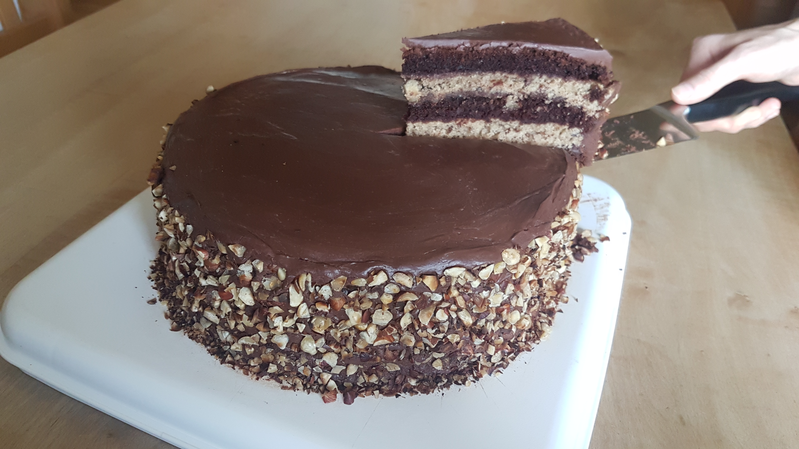

Basierend auf diesem Rezept für Haselnusskuchen und für Schokokuchen.
Enthält ca. 1 Tafel Schokolade pro Stück.

Zutaten
Schokoteig:
| 200 |
ml |
(Pflanzen)Milch |
| 100 |
ml |
Kaffee (ca. 2 Espressi) |
| 150 |
g |
Öl |
| 30 |
ml |
Essig oder Zitronensaft |
| 380 |
g |
Mehl |
| 50 |
g |
Kakao |
| 200 |
g |
Zucker |
| 2 |
TL |
Natron |
| 1/2 |
TL |
Salz |
| 50 |
g |
Schokolade, gehackt |
Haselnussteig:
| 250 |
g |
Mehl |
| 150 |
g |
Haselnüsse, gemahlen |
| 50 |
g |
Haselnüsse, grob gehackt |
| 8 |
g |
Backpulver |
| 120 |
g |
Zucker |
| 1 |
Prise |
Vanille |
| 250 |
ml |
(Pflanzen)Milch |
| 70 |
g |
Öl |
| 20 |
g |
Haselnussmus (alternativ: Mandelmus) |
Ganache:
| 350 |
g |
Zartbitterschokolade |
| 220 |
g |
(Soja)Milch |
| 20 |
g |
Öl |
Sonstiges:
| ca. 400 |
ml |
Schokonuss |
| 150 |
g |
Haselnüsse, geröstet und gehackt |
Anleitung
Schokokuchen
- Alle flüssigen Zutaten vermischen und ein paar Minuten (z.B. während man die trockenen Zutaten abwiegt) stehen lassen, bis die Sojamilch etwas dickflüssig geworden ist.
- Alle trockenen Zutaten mischen, die flüssigen Zutaten dazugeben und zu einem glatten Teig rühren.
- Bei 180°C Umluft ca. 30-40min backen.
Haselnusskuchen
- Alle trockenen Zutaten mischen.
- Alle flüssigen Zutaten mischen und mit den trockenen Zutaten zu einem glatten Teig verrühren.
- Bei 180°C Umluft ca. 30-40min backen.
Ganache
- Schokolade mit (Soja)Milch und Öl schmelzen und gut durchrühren
- Auf Zimmertemperatur abkühlen lassen.
"Bauanleitung"
- Den Schoko- und Haselnusskuchen komplett auskühlen lassen.
- Den Schokokuchen in drei, den Haselnusskuchen in zwei gleich dicke Teile schneiden.
- Abwechselnd Schoko- und Haselnusskuchen großzügig mit Schokonuss bestreichen und stapeln.
- Den Kuchen 15-30min kühl stellen damit das Schokonuss fest und der Kuchen stabiler wird.
- Den Kuchen mit einer dünnen Schicht Ganache bedecken und nochmals ca. 15min kalt stellen.
- Restliche Ganache auf dem Kuchen verteilen und den Rand mit gehackten Haselnüssen bestreuen.
Anmerkungen
- Statt (Soja)Milch und Öl kann man auch (Pflanzen)Sahne für die Ganache nehmen.